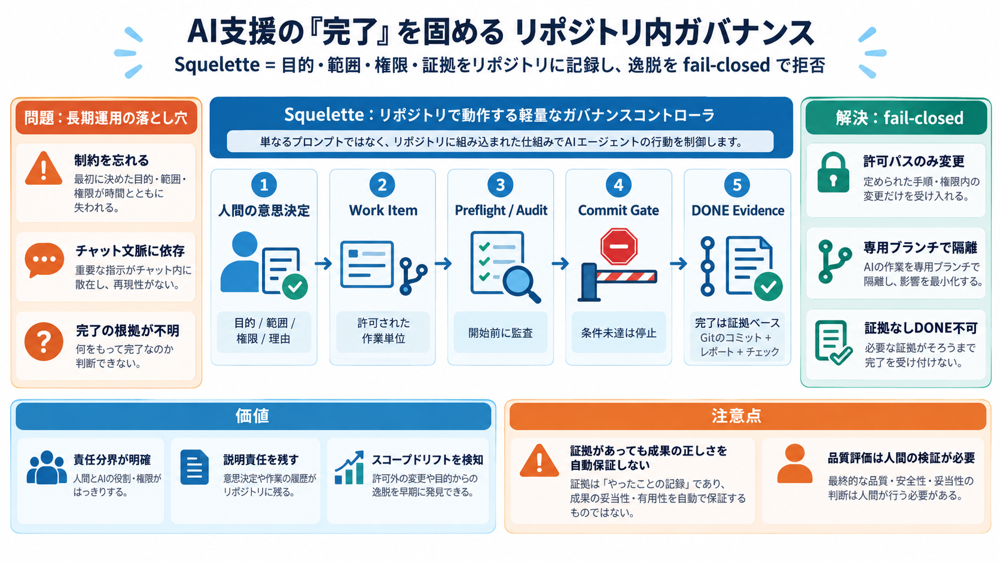

AI agent governance: A framework for engineering leaders
AI agent governance is delegated authority management for coding agents operating inside your development lifecycle. It …

AI支援の“完了”を固める
Squeletteは、AIエージェントがコードやドキュメント作業を行う際に、人間の意思決定・範囲・権限・完了の証拠をリポジトリへ明示して、逸脱を拒否（fail-closed）する軽量フレームワークです。
（日本語補足: ガバナンス=統治・管理、プロビナンス=真正性の根拠）
長期運用の落とし穴
AIは長期になるほど制約を忘れたり、チャット文脈に依存して判断が揺れたり、想定外のファイルを編集しやすくなります。結果として、後から「本当に完了したのか」を追跡しにくくなります。
Failure mode
読んだと言ったが、
何を根拠に判断したか不明
Failure mode
完了と言うだけで、
証拠（evidence）がない
指示文ではない
Squeletteは単なるプロンプトではなく、リポジトリ上で動くチェックコントローラです。条件を満たさない限り、コミットや進行を止めて（fail-closed）不整合を混入させません。
Preflight
開始前に監査（audit）
Commit gate
ゲート通過で前進
Done evidence
完了の証拠を要求
理解のための語彙
設計の核は「何を許可し、どこで追跡し、何を完了とみなすか」です。次の語彙を押さえると読みやすくなります。
Git branch
ブランチ（作業の枝）
Audit
監査（状態の検査）
Work Item
作業単位（人間が許可）
Evidence
証拠（レポート/コミット履歴等）
仕組みの結線
Squeletteは、人間の意思決定をリポジトリへ記録し、その記録に紐づく形でAIの作業範囲と完了定義（Definition of Done）を制御します。
State is recorded
意思決定（目的・範囲・権限・理由）を監査可能な形で保持
Evidence is required
レポートだけでなく、Git由来の参照や痕跡で検証を寄せる
安全側に倒す
ルール不一致があれば進行を拒否する設計により、AIの誤解や逸脱がそのままリポジトリへ混入しにくくなります。ガイドラインではなく、実行可能なチェックが効果を支えます。
Rule
許可された条件以外はNG
Gate
コミット/進行を止める
Result
逸脱の拡散を抑制
範囲の肥大化を防ぐ
Work Itemは、人間が「許可した範囲と枝（ブランチ）」に結び付けられます。許可されていないパスへの変更を防ぎ、作業の拡大（スコープドリフト）を抑えます。
Authorized paths
許可されたパスのみ変更可
専用ブランチ
Work Itemごとに作業を隔離
完了は“主観”ではない
完了（DONE）には、適用可能なゲートを満たしたことの証拠が必要です。ローカルレポートを「それっぽく」済ませず、Git由来の参照や痕跡で検証する発想があります。
Before Done
チェックを通過しないとDONE不可
Evidence coupling
証拠とDONEを結び付け、独立成立を抑制
要点だけ確認
Squeletteの位置付けは「助言」ではなく「チェックと拒否」です。特に、Work Itemと証拠要件が中核になります。
Q1 Prompt?
いいえ。リポジトリ内コントローラ。
Q2 Work Item?
人間が許可した作業単位。
Q3 DONE?
ゲートごとの証拠が必須。
価値と注意点
Squeletteの強みは「目的・範囲・権限・証拠」を連結し、長期プロジェクトの逸脱（範囲の肥大化・忘却・完了宣言の独り歩き）を検知して拒否する点です。一方で、証拠の整備＝成果の正しさを自動保証するわけではありません。
Strength
責任分界と説明責任（accountability）を作りやすい
Caution
証拠形式が“作れてしまう”場合、品質まで保証しない
参照
本デッキは、提示された本文（Squeletteの説明・FAQ・意見）と、その補助としての「Web検索/過去履歴の要約」に基づいて圧縮しています。
AI agent governance is delegated authority management for coding agents operating inside your development lifecycle. It …
An AI agent framework is a software library that provides primitives for building LLM-powered agents: tool calling, mult…
`claude -p` `rm -rf` `terraform destroy` `git push --force` `DROP TABLE` `chmod 777` `.env` `pr verify` `.provenrail.jso…
Agentic AI systems—those that execute multi-step tasks, call external tools, and take actions autonomously—require gover…
That means August 2026 is not just a legal milestone. It is a delivery deadline for technical controls. If your audit tr…